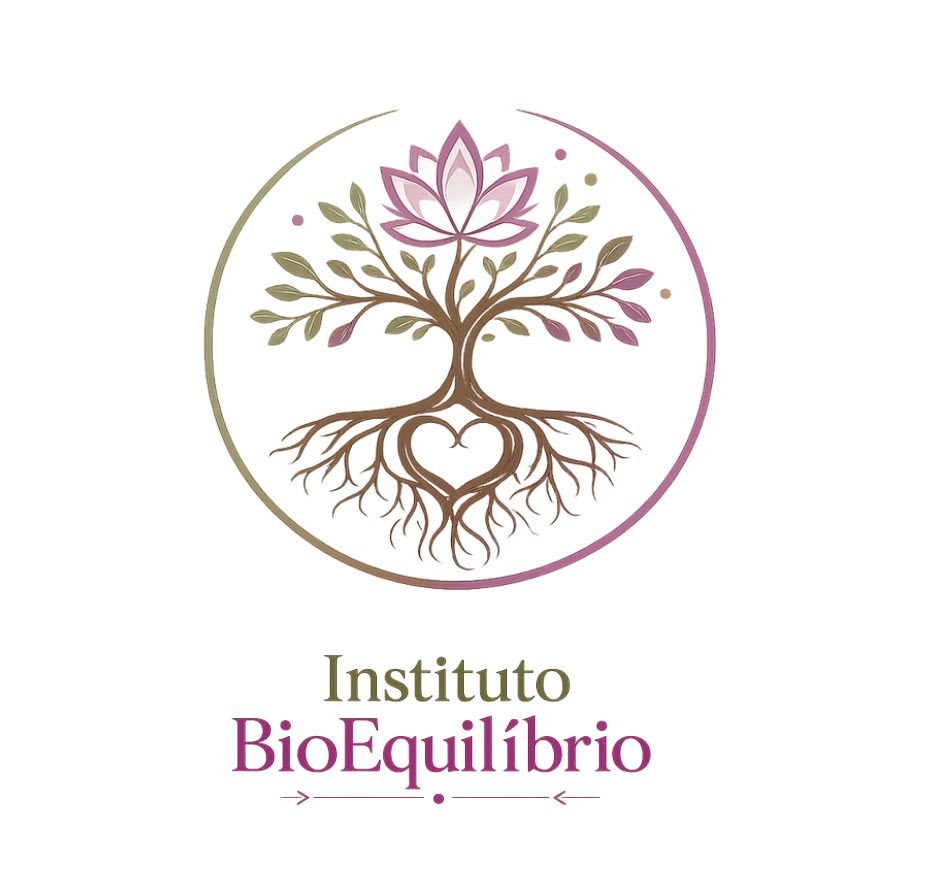

Atendimento humanizado
Cada pessoa é recebida com escuta atenta e sem pressa. A sua história importa tanto quanto os seus sintomas — e é por ela que todo tratamento começa.
Onde o corpo volta a ser inteiro.
O Instituto BioEquilíbrio atua na restauração do equilíbrio do corpo por meio de terapias integrativas — estimulando a capacidade natural de autorregulação do organismo, auxiliando no alívio de dores, na redução do estresse e no fortalecimento do sistema imunológico.
Escuta • Origem • Equilíbrio

Trabalhamos ao lado da medicina convencional — nunca no lugar dela — com escuta, tempo e presença.
Cada pessoa é recebida com escuta atenta e sem pressa. A sua história importa tanto quanto os seus sintomas — e é por ela que todo tratamento começa.
Recursos terapêuticos naturais e integrativos que estimulam a capacidade do próprio organismo de se autorregular e se recuperar.
As terapias integrativas somam-se a outros tratamentos de saúde. Você não precisa escolher entre um caminho e outro — eles caminham juntos.
29
práticas integrativas reconhecidas oficialmente pelo SUS
+7 mi
procedimentos integrativos realizados no SUS em 2024
8
recursos terapêuticos combinados sob medida para você
30
dias de acompanhamento contínuo no Método E.O.E.
Fontes: Ministério da Saúde — Política Nacional de Práticas Integrativas e Complementares (Portaria GM/MS nº 971/2006) e dados de procedimentos PICS no SUS (2024).
Cada história é única. Cada tratamento também. O Método E.O.E. é um acompanhamento terapêutico integrativo de 30 dias, para quem deseja compreender a origem dos seus sintomas físicos e emocionais.
O primeiro encontro é dedicado à escuta terapêutica e à avaliação da sua história, identificando as necessidades de cada caso.
A partir dessa análise, buscamos a origem dos sintomas — física e emocional — e elaboramos um plano terapêutico individualizado.
Ao longo de 30 dias, os recursos terapêuticos são aplicados conforme a necessidade de cada pessoa, acompanhando a sua evolução.
Nenhum protocolo é fechado: os recursos são escolhidos após a escuta e a avaliação de cada caso.
Aplicação de ímãs em pontos específicos do corpo para reequilibrar o organismo — dores crônicas, fadiga e processos inflamatórios.
Saiba mais →Essências florais para ansiedade, luto, bloqueios emocionais e esgotamento — escolhidas em consulta individual.
Saiba mais →Espaço de fala e escuta para compreender padrões, bloqueios e marcas do passado que se repetem no presente.
Saiba mais →Técnica energética de avaliação e reequilíbrio, personalizada para diferentes queixas físicas e emocionais.
Saiba mais →Ferramenta de harmonização energética que auxilia na identificação e transmutação de desequilíbrios.
Saiba mais →Blends aromáticos preparados de forma personalizada como apoio ao cuidado físico e emocional.
Saiba mais →Toque terapêutico e massagem preventiva para aliviar tensões, cuidar do corpo e prevenir desconfortos.
Saiba mais →Ferramenta de autoconhecimento que ajuda a compreender ciclos, padrões e caminhos da sua história.
Saiba mais →Apoio a crianças e famílias: sono, agitação, adaptações e vínculos.
Acolhimento nas transições hormonais e emocionais da mulher.
Redução do estresse e regulação do sistema nervoso, com calma e constância.
Suporte complementar ao tratamento médico, com foco no bem-estar e na imunidade.
Meu filho voltou a dormir a noite inteira. O acompanhamento foi delicado, respeitoso e transformou a rotina da nossa casa.
Atravessar a menopausa deixou de ser uma luta solitária. Encontrei escuta, acolhimento e recursos que realmente me ajudaram.
O biomagnetismo aliado à escuta clínica me devolveu a tranquilidade. A ansiedade diminuiu e voltei a confiar no meu corpo.
Auxilia no equilíbrio emocional em momentos de tensão, sustos e sobrecarga. Praticidade para levar na bolsa e usar quando precisar.
Pedir pelo WhatsApp →Fórmula floral preparada sob medida, de acordo com a sua necessidade emocional do momento, após conversa terapêutica.
Pedir pelo WhatsApp →Entenda como a aplicação de ímãs em pontos específicos do corpo pode auxiliar no reequilíbrio do organismo.
As 38 essências florais e o papel da consulta individual na composição da sua fórmula.
Sintomas físicos da ansiedade e como as terapias integrativas ajudam a regular o sistema nervoso.
Agende uma conversa inicial com a Paula — presencial na Vila Monumento (SP) ou on-line — e descubra o caminho terapêutico mais adequado para você.
Falar com a Paula no WhatsApp